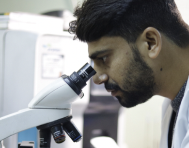

Give your hearts the love it deserves
Does decoding your health test reports leave you confused?
Learn More
Our Services
Digital Radiography
Ultrasonopgraphy (USG)
Cardiology Department
Laboratory Services
Our Facility/Services
We always work with patience

DIGITAL RADIOLOGY
Our radiography (X-Ray) Department is equipped with latest D.R System by GE Healthcare. Digital high frequency…
Read More
ULTRASONOGRAPHY (USG)
We provide state of the art professional versatile ultrasound scanning services with real time and complete…
Read More
COMPUTERIZED TOMOGRAPHY (CT) SCAN
We perform CT Scans on most advanced multi slice scanner (CT Brivo385 by GE Healthcare). It is a 32 slice…
Read More
CARDIOLOGY DEPARTMENT
Headed by Dr. Anunai Srivastava (MD, DM Cardiology), Our cardiology department is equipped with laser…
Read More

LABORATORY SERVICES
Our laboratory services are supervised by Senior Experienced Doctor (Dr. SK Gupta MD. Pathology)…
Read More
OTHER SERVICES
We have CT Scan, Ultrasound, Color Doppler, Digital X-Ray, Special X-Ray, Echo, TMT, ECG, USG/CT-Guided Fnac
Read More
Achievements
1000+
COMPLETED TEST
1200+
HAPPY CLIENTS
120+
TEST
450+
POSITIVE REVIEWS
What people say about us
I really think that this is the best lab in North Delhi
–
Preeti Ahuja
New Delhi
I really think that this is the best lab in North Delhi
–
Preeti Ahuja
New Delhi
Contact us for help or to know more about us
CONTACT US

Newsletter
Subscribe to gate Latest News, Offer and connect With Us.
Contact Us
C 31, Ground Floor, Rajan Babu Road, Adarsh Nagar, New Delhi, Delhi 110033
+91 9833408356
gunjangmail.com